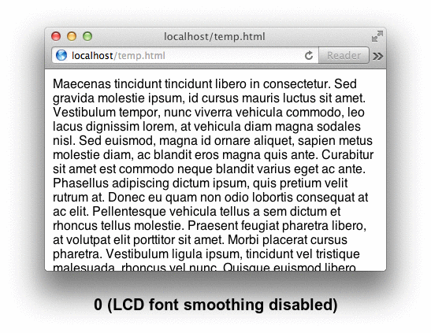

Table of Contents
1 Terminal Mode
By default, Apple's Terminal binds Option (Alt) to just sending alternative
characters. If you want to use it as an actual Meta-key in Emacs, you have to
go into Terminal Preferences, Profiles, Keyboard and "Use Option as Meta-key".
It's also a very good idea to go into the Advanced tab and setting the Terminfo declaration to "xterm-256color" to enable more colors.
2 Avoiding long freezes in the app GUI after inactivity
There is a severe bug in Emacs for macOS, wherein Apple's "App Nap" will put Emacs to sleep whenever it's in the background or covered by another window. As soon as you attempt to use Emacs again, there will be a ~10 second delay before it recovers and becomes responsive.
You can track the bug here: https://github.com/syl20bnr/spacemacs/issues/5413
The solution for now is to disable "App Nap" for Emacs, by running the following command in a terminal:
defaults write org.gnu.Emacs NSAppSleepDisabled -bool YES
Disabling "App Nap" will also be the official Emacs code solution later.
Furthermore, you may sometimes experience brief "pauses" in execution where
Emacs seems to stall. But if you press Ctrl-g, you can tell Emacs to abort
the function it's currently executing, which is a great way to regain
responsiveness whenever Emacs slows down due to some misbehaving function.
3 Native keybindings in Emacs for macOS
The "osx" Spacemacs layer has been enabled, which adds various compatibility
features and sets up standard system keybindings, such as Command-z to undo.
The full list of keybindings can be seen here: http://spacemacs.org/layers/+os/osx/README.html#key-bindings
However, I've disabled the Command-q shortcut, since it's too easy to hit by
accident and instantly quitting Emacs with one wrong move. If you try the key,
a message will tell you to press SPC q q if you really want to quit.
4 Font Antialiasing Tweaks
4.1 Explaining Apple's font antialiasing
The choice of "thick" antialiasing on macOS was made by Apple as a way to stay truthful to the real shapes of the actual font. However, the blurriness is annoying for small fonts and programming.
Luckily there is a way to manually configure their antialiasing algorithm.
There are four different algorithms (0 to 3):
| int | Algorithm | Notes |
|---|---|---|
| 0 | No Subpixels. Blurry. | Antialiases using only shades of gray. |
| 1 | Thin/Crisp Subpixels | Clean and crisp subpixel antialiasing. |
| 2 | Medium Subpixels | macOS >=10.11 default. Pretty clean. |
| 3 | Heavy/Fuzzy Subpixels | macOS <=10.10 default. Very ugly. |
| 4+ | Falls back to int 0 | There are no settings from 4 and up. |
Subpixels refer to the fact that LCD pixels are divided into 3 colors. By antialiasing the fonts using LCD-aware subpixels, it is possible to render "1/2 pixels" and "1/3" pixels to help out with much crisper antialiasing.
You should never set this value to zero (disabled) since it then falls back to old-school pre-LCD techniques of using shades of gray "whole-pixel" antialiasing, which gives extremely blurry, distorted font shapes.
The recommended value for programming is 1, the crispest subpixel mode. It looks pretty much like 0, but with much crisper font edges.
There are preview images of all modes in the final section of this document.
4.2 Changing the antialiasing settings
4.2.1 Option 1: Only for Emacs.app (leaves the rest of the system as normal)
# Enabling antialiasing method override for Emacs defaults write org.gnu.Emacs AppleFontSmoothing -int 1 # Checking the current value (if no value, OS defaults are used) defaults read org.gnu.Emacs AppleFontSmoothing # Deleting the Emacs antialiasing method override defaults delete org.gnu.Emacs AppleFontSmoothing
4.2.2 Option 2: Globally for the whole operating system
# Enabling a global override for all applicatons on the system defaults write -g AppleFontSmoothing -int 1 # This second line is also necessary, to take care of windows # shown by processes owned by root, such as the Force Quit window sudo defaults write -g AppleFontSmoothing -int 1
4.3 Bonus: Completely disabling antialiasing for Emacs.app
This can be very useful if you want to use sharp, pixel-based fonts.
# Completely disables antialiasing for font sizes 25 and below defaults write org.gnu.Emacs AppleAntiAliasingThreshold -int 25 # Checking the current value (if no value, OS default of "4" is used) defaults read org.gnu.Emacs AppleAntiAliasingThreshold # Deleting the Emacs size antialiasing override defaults delete org.gnu.Emacs AppleAntiAliasingThreshold
5 Previews of Apple's Subpixel Antialiasing algorithms
If you are viewing this document within Emacs, click on the images below and
then press f or b to switch between the frames of the GIF animations, to
see previews of all available antialiasing methods.
In Emacs:
Image created by me using Emacs 25 and the font settings in the screenshot.

In General Web Browser:
This image was created by someone else and contains misinformation in the text labels. All modes from 1-3 use subpixels, as seen by zooming with an image editor. Other than that mistake, this is a good comparison of what your system might look like if you globally change the setting.
